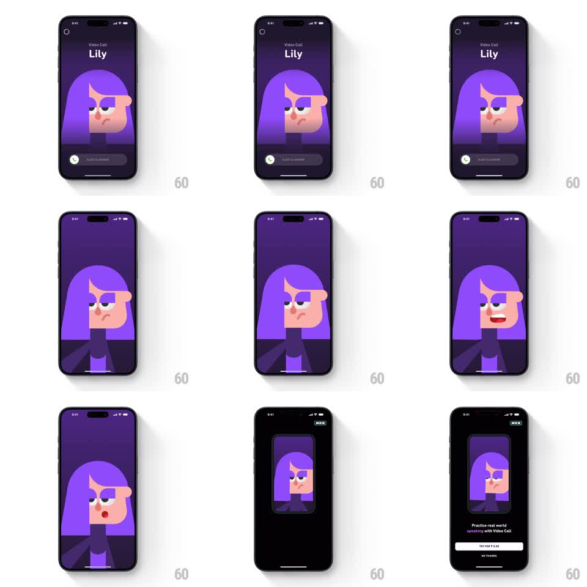

Media
Frame-by-frame

Rebuild this interaction 1:1: Duolingo's Lily video call - an incoming call screen with a slide-to-answer control, a simulated call where Lily animates and talks, then the call shrinks into a small card atop the Video Call subscription paywall.

Rebuild this interaction 1:1: Duolingo's Lily video call - an incoming call screen with a slide-to-answer control, a simulated call where Lily animates and talks, then the call shrinks into a small card atop the Video Call subscription paywall. ## Integration Integration: stack-agnostic spec - springs given as stiffness/damping, timed motions as duration + curve; map every value to your framework and animation library of choice. ## Scene A full-screen purple "Video Call - Lily" incoming call: Lily's illustrated face large at center, a "SLIDE TO ANSWER" slider at the bottom. Answering transitions into the call: Lily fills the screen, idling with blinks and head tilts, then talking with mouth and expression animation. Finally the call view shrinks into a small rounded floating card at the top of a dark paywall: "Practice real world speaking with Video Call", a "TRY FOR" price button, and "NO THANKS". ## Motion spec Pattern: call answer to paywall shrink, gesture-driven start. - The incoming call pulses gently: Lily's portrait breathes (scale 1 to 1.02, 2s) and the slider's chevrons shimmer rightward (1.2s loop). - Sliding the control tracks 1:1; past 70 percent it completes (spring stiffness 350 damping 24), the chrome fading out as Lily's view expands to full bleed (400ms, ease-out). - In-call, Lily idles with subtle motion (blink every 2 to 4s, small head sway) and talks in bursts (mouth shapes cycling, expression shifts). - On the paywall transition, the call view shrinks with rounded corners into a floating mini card (400ms, ease-in-out) that docks at the top of the paywall, its content still live, while the paywall text and buttons rise in below (stagger 100ms, 300ms). ## Calibration - The shrink keeps the call alive in miniature - a picture-in-picture feel, not a screenshot. - The paywall's offer buttons are static once landed; all charm is in the transitions. ## Reduced motion Call and paywall crossfade. ## Don't miss - Lily's illustration is 3D-ish character art with real expression changes, not a static avatar. - The mini call card keeps animating above the paywall.